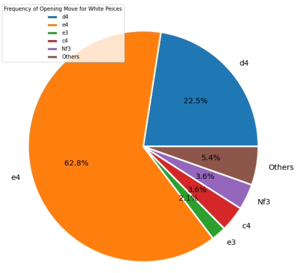
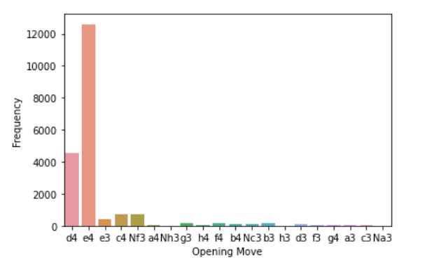
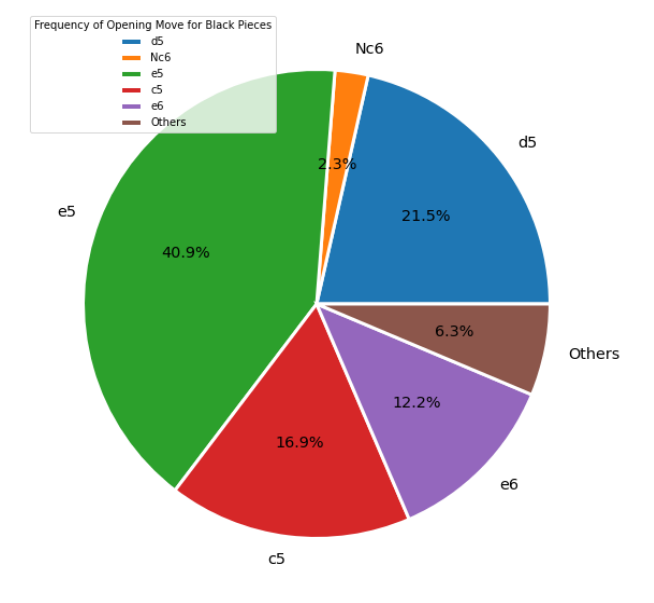
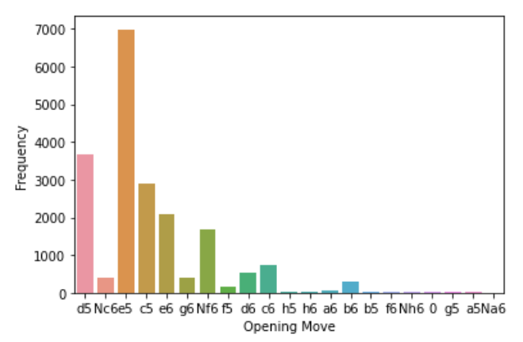
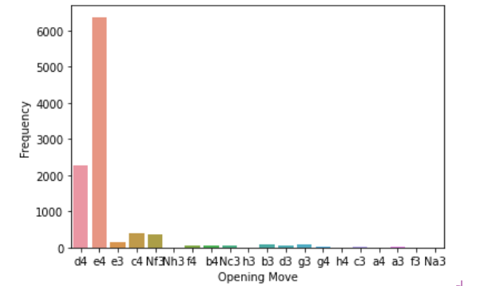
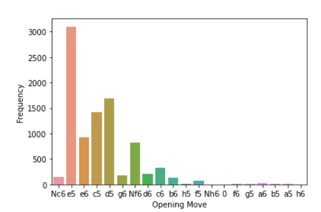

As someone who just recenty learned to play chess, I became addicted fast. Chess has alwyas been percieved as a board game for "smart" people, but anyone can learn and play it just like I did. After playing Chess for a few weeks I've had the desire to get better, but in doing so I became curious about how likey it was for a player to win based on opening moves. So, what opening chess moves are statistically more likely for a player to win a game for white and black pieces? What percentage of games are won by the player with the higher rating? Does this vary by piece color?

This is what a chess board looks like
 This is a visualization for how often an opening move is for white pieces. E4 is the most common move with about 60% of all opening move options
 This is a visualization for how often an opening move is for black pieces responing to Whites first move. E5 is the most common move with 40% of all responding move options
 The left graph shows the frequency of an opening move for when white wins the game. On the right, the graph displays the frequency of an opening move for when black wins the game. Both graphs have around 50% frequency of the original graphs
In conclusion, there was a positive proportional relationship between opening move occurences and winner. The more freqeunt an opening move is, the more likely a certain side is to win. Chess is a game of many outcomes and one opening move does not have enough power to influence the whole game. No matter what opening move you play, it won't matter as much as long as you play the game right. If your ever the lower rated chess player, just know that you have a 40% chance of winning the game, but always try to beat the odds. Keep on playing chess and keep on getting better!